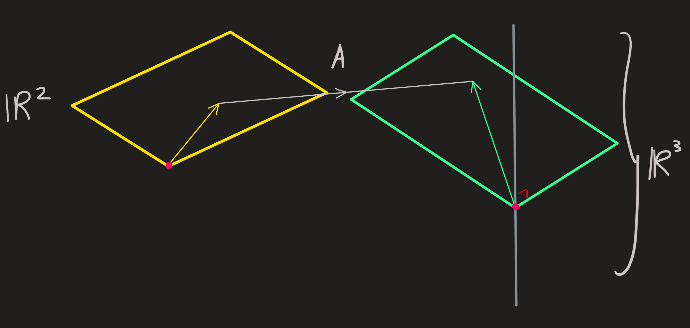
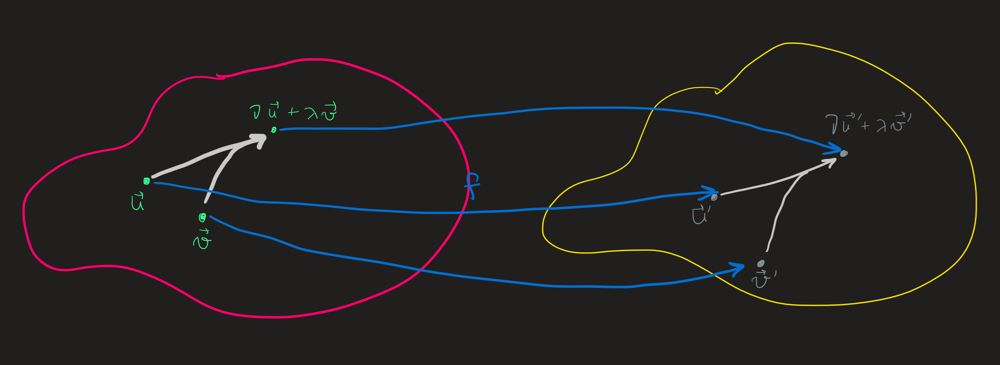
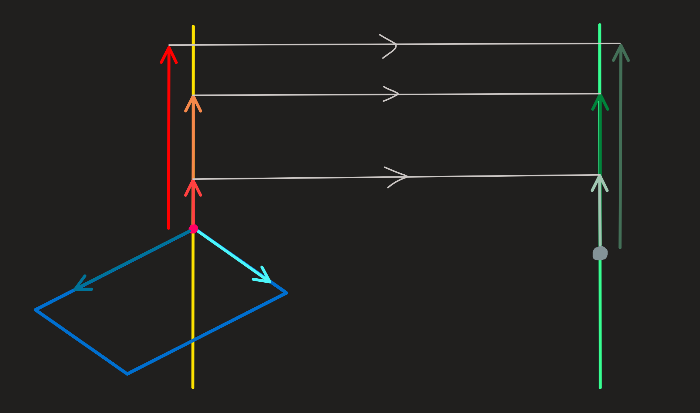
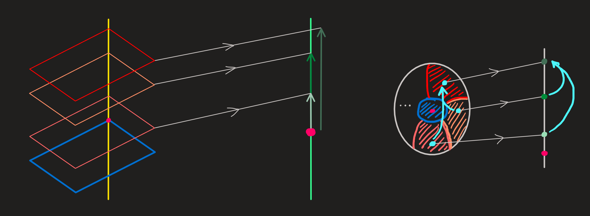
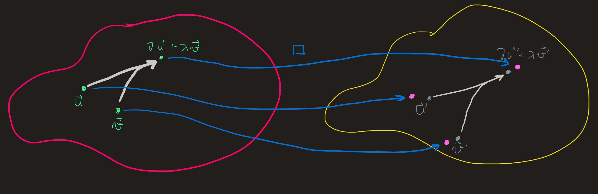

Understanding mapping properties of linear functions
Mapping properties of \(f\)
The way \(f\) maps vectors is analogous to the way \(A\) maps column vectors. Thus, working out properties of the map \(A\) tell us something about the map \(f\). And by properties I mean: is \(f\) 1-1? Onto? Bijective? We can answer these questions by asking them instead to \(A\).
Example 1
Consider two vector spaces whose dimensions are:
\[ \dim \mathbb{V}=3 \qquad \dim\mathbb{W}=1 \]
we do not know what are its elements, but still we label a basis they have as:
\[ \mathbf{B}=(v_1,v_2,v_3)\qquad\mathbf{C}=(w_1) \]
these are just labels, but they immediately tells us that elements of \(\mathbb{V}\) and \(\mathbb{W}\) can acquire the form:
\[ v=\mathbf{B} X \qquad X=\begin{pmatrix}x_1\\x_2\\x_3\end{pmatrix} \tag{1}\]
and
\[ w=\mathbf{C}Y \qquad Y=y_1 \tag{2}\]
I want now to introduce a function \(f:\mathbb{V}\overset{\sim}{\longrightarrow} \mathbb{W}\), but rather than telling a formula for it (which would also require to provide a form for the elements of \(\mathbb{V}\) and \(\mathbb{W}\)) , I decide just to provide the action of \(f\) on the basis labels:
\[ f(v_1)=f(v_3)=2w_1\qquad f(v_2)=0w_1 \]
i.e.
\[ f(\mathbf{B})=\mathbf{C} A \qquad A=\begin{pmatrix}2& 0&2\end{pmatrix} \]
This is enough for us to be able to compute the action of \(f\) on a generic \(v\in\mathbb{V}\):
\[ f(v)=\mathbf{C}AX = w_1 \begin{pmatrix}2& 0&2\end{pmatrix} \begin{pmatrix}x_1\\x_2\\x_3\end{pmatrix} \]
Since we have \(f(v)\in \mathbb{W}\), we know from Equation 2 that \(f(v)=y_1 w_1\), we conclude:
\[ (y_1)=\begin{pmatrix}2& 0&2\end{pmatrix} \begin{pmatrix}x_1\\x_2\\x_3\end{pmatrix} \]
This is \(Y=AX\), mapping the \(v\in \mathbb{V}\) represented wrt \(\mathbf{B}\) into a \(f(v)\) represented wrt \(\mathbf{C}\).
Notice we know how to map any vector even though we did not specify what is \(\mathbb{V}\), nor \(\mathbb{W}\) and neither the form of the basis elements of both, we only provided labels for them. Knowing how \(f\) act on these labels was enough!
The 4 subspaces of a mtatrix and their consequences
What is the kernel of \(f\)? Adapting the definition to the present example we have to solve the problem of finding the nullspace of the matrix \((2,0,2)\):
\[ AX_N=0 \iff \begin{pmatrix}2& 0&2\end{pmatrix}\begin{pmatrix}x_{1N}\\x_{2N}\\x_{3N}\end{pmatrix}=(0) \]
Since we have one pivot on the first column and two dependent columns, we expect two dimensions.
Isolating \(Col_2\) by setting \(y_N=1\) and \(z_N=0\), the only answer is \(x_N=0\), thus \((0,1,0)\) is in the nullspace.
Isolating \(Col_3\) by setting \(y_N=0\) and \(z_N=1\), we find \(x_N=-1\), the second basis vector is \((-1,0,1)\).
Any l.c. of these solutions is also mapped to \(0\), thus:
\[ N(A) = span \{(0,1,0)^\intercal,(-1,0,1)^\intercal\} \]
Now we convert the nullspace into the kernel of \(f\) by multiplying the elements of the set by \(\mathbf{B}\) (see diagrams above) and ?@eq-ker_f:
\[ \ker f = span \{\mathbf{B}(0,1,0)^\intercal,\mathbf{B}(-1,0,1)^\intercal\} \]
The image of \(f\) is \(f(\mathbb{V})\) and we can get it from the column space of the matrix \(A\)
Looking closer at \(AX\) we find:
\[ \begin{pmatrix}2& 0&2\end{pmatrix}\begin{pmatrix}x_{1}\\x_{2}\\x_{3}\end{pmatrix} \]only one independent column, the first one, thus the column space is just:
\[ C(A)=span\{(2)\} \]
And from ?@eq-im_f, the image of \(f\) is:
\[ f(\mathbb{V})=span\{2w_1\} \]
We see that the kernel and image of \(f\) are just analogous to the nullspace and column space of the matrix \((2,0,2)\). See diagrams above.
Orthogonal spaces: (Rowspace and left-nullspace) From the matrix \(A\) we can define the row-space as
\[ C(A^\intercal)=span\{(1,0,1)^\intercal\} \]
[Commentary: when multiplied by \(\mathbf{B}\) gives us the image of \(\hat{f}\). Note that while rowspace and nullspace are orthogonal wrt \(\cdot_{\mathbb{R}^n}\), the corresponding subspaces in \(\mathbb{V}\) need not be, since \(\{v_i\}_{i=1,..,n}\) may not be orthogonal wrt \(\cdot_\mathbb{V}\)]
While the left-nullspace is just
\[ N(A^\intercal)=\{(0)\} \]
The rowspace and nullspace break the domain \(\mathbb{R}^3\) into two subspaces, while the column space and codomain are equal:
\[ \mathbb{R}^3 = span\{(1,0,1)^\intercal\}\oplus span \{(0,1,0)^\intercal,(-1,0,1)^\intercal\}\qquad \mathbb{R} = \mathbb{R}\oplus\{0\} \]
From this, the following picture tells us how one vector \(X\) in \(\mathbb{R}^3\) is mapped into \(AX\in\mathbb{R}\)

Given these subspaces of the domain and codomain we can now focus on describing the kind of mapping that \(A\) does and turn that \(f\) does. On the picture we see a vector \(X\) being decomposed into its parts, one in the nullspace and another in the row space:
\[ X=X_{R}+X_{N} \]
The \(X_N\) is mapped by this \(A\) into \(0\), and \(X_R\) is mapped into \(AX_R\), thus we can write \(AX=AX_R\) for all \(X\in \mathbb{R}^3\).
For each \(X_R\) in the rowspace we can any add any vector of the null space, the image is always \(AX_R\). Therefore this is not a 1-1 function.
But is it onto? For any element \(Y\) of \(\mathbb{R}\) we can find a \(X\), such that \(AX=Y\) i.e. there are always solution \(x_1\) and \(x_3\) such that
\[ y_1=2x_1+2x_3 \]
for any \(y_1\) we choose from \(\mathbb{R}\).
Thus \(A\) is onto and so is \(f\).
As a consequence we conclude that any equation
\[ f(v)=w \]
(given a \(w\)) always has solution, in fact has an infinite number of solutions, thanks to the fact that the nullspace is not just \(0\).
Another way to put this, this \(f\) has no inverse, however in its place a fiber can be defined:
\[ f^{-1}(w)=\{v\in\mathbb{V}\,\,|\,\,f(v)=w\} \]
To compute this requires solving an already known to us problem \(AX=Y\)! This is what we have been doing in the beginning of the course.
Example 2
Consider two vector spaces \(\mathbb{V}\) and \(\mathbb{W}\) and the following action on a basis:
\[ \begin{align} f(v_1)&=w_1+2w_2+3w_3\\ f(v_2)&=2w_1+4w_2+6w_3\\ f(v_3)&=2w_1+6w_2+8w_3\\ f(v_4)&=2w_1+8w_2+10w_3 \end{align} \]
i.e.
\[ f(\mathbf{B})=\mathbf{C}A,\qquad A=\begin{pmatrix}1 & 2 & 2 & 2 \\2 & 4 & 6 & 8 \\3 & 6 & 8 & 10 \end{pmatrix} \]
The action of \(f\) on some generic element of \(\mathbb{V}\)
\[ v=\mathbf{B}X\qquad X=\begin{pmatrix}x_1\\x_2\\x_3\\x_4\end{pmatrix} \]
is:
\[ f(v)=\mathbf{C}AX=\begin{pmatrix}w_1 & w_2 & w_3\end{pmatrix} \begin{pmatrix}1 & 2 & 2 & 2 \\2 & 4 & 6 & 8 \\3 & 6 & 8 & 10 \end{pmatrix}\begin{pmatrix}x_1\\x_2\\x_3\\x_4\end{pmatrix} \]
And since:
\[ f(v)=\mathbf{C} Y \qquad Y=\begin{pmatrix}y_1\\y_2\\y_3\end{pmatrix} \]
we conclude that:
\[ \begin{pmatrix}y_1\\y_2\\y_3\end{pmatrix}=\begin{pmatrix}1 & 2 & 2 & 2 \\2 & 4 & 6 & 8 \\3 & 6 & 8 & 10 \end{pmatrix}\begin{pmatrix}x_1\\x_2\\x_3\\x_4\end{pmatrix} \]
The nullspace of \(A\) is (we already computed this before, here):
\[ N(A)=span\{\begin{pmatrix}-2\\1\\0\\0 \end{pmatrix},\begin{pmatrix}2\\0\\-2\\1 \end{pmatrix}\} \]
The image of \(f\) is computed from the \(C(A)\), which is:
\[ C(A) =span\{\begin{pmatrix}1\\2\\3\end{pmatrix},\begin{pmatrix}2\\6\\8\end{pmatrix}\} \]
The orthogonal spaces: (rowspace and left-nullspace) Recall the rowspace and left nullspace are orthogonal to these and have the following dimensions:
\[ C(A^\intercal)=span\{(1,2,2,2)^\intercal,(2,4,6,8)^\intercal\} \qquad N(A^\intercal)=span\{(-1,-1,1)^\intercal\} \]

Looking at the diagram, any \(X\), can be broken into two parts:
\[ X=X_R+X_N \]
Any \(Y\) can also be broken into:
\[ Y=Y_C+Y_{LN} \]
The matrix \(A\) maps any \(X\) into the \(C(A)\), the \(N(A^\intercal)\) is never reached. This means that for any \(Y\) with components in the left null space the equation:
\[ AX=Y \]
has no solution.
Any \(Y\) living exclusively in the column space has a fiber of elements of the form \(X_R+X_N\), for a fixed \(X_R\) and \(X_N\) ranging over the entire two dimensional \(N(A)\). [Comment: This \(X_R\) may or not be the particular solution we find when solving a system of equation, see here.]
Evidently, this function is neither 1-1, nor onto, and no inverse (except in the sense of fiber) exists.
Example 3
The map:
\[ \begin{align} f:\mathbb{V}&\longrightarrow \mathbb{W}\\ v&\longmapsto f(v) \end{align} \]
can be specified wrt the bases:
\[ \mathbf{B}=\begin{pmatrix}v_1 & v_2 & v_3\end{pmatrix} \qquad \mathbf{C}=\begin{pmatrix}w_1 & w_2 & w_3\end{pmatrix} \]
by introducing the matrix:
\[ A=\begin{pmatrix}1 & 1 & -1 \\2 & -1& 2 \\1 & 2 & -1\end{pmatrix} \]
Thus \(f(v)\) acquires the form:
\[ f(v)=\mathbf{C}AX \qquad v=\mathbf{B}X \qquad X=\begin{pmatrix}x_1\\x_2\\x_3\end{pmatrix} \]
The map between entries of \(v\) wrt \(\mathbf{B}\) and the entries of \(f(v)\) wrt \(\mathbf{C}\) is the equation:
\[ Y=AX \]
For which we can get the nullspace and column space.
\[ N(A)=\{(0,0,0)^\intercal\} \qquad C(A)=\mathbb{R}^3 \]
just like we computed before.

There is only one solution. It is 1-1 and surjective. There is inverse.
Example 4:
\[ \begin{align} f:\mathbb{R}^3&\longrightarrow \mathbb{R}^3\\ \mathbf{x}&\longmapsto f(\mathbf{x}):=A\mathbf{x} \end{align} \]
with
\[ A=\begin{pmatrix}2 & -1 \\2 & 1 \\2 & 1\end{pmatrix} \]
The four spaces were already computed before, here is a diagram:

If \(b\) vector is outside column space them there is no solution! Not surjective.
(Mathematical) Motivation: Linear Maps are Structure preserving maps. Whaaaat?
Why are these linear functions important?
We will answer this question in two ways: a zoom in version and a zoom out version (later)
Zoom in version: The rule says something important about the map \(f\), on the lhs we see an l.c. of elements of \(\mathbb{R}^n\), i.e., \(\nu\bf{u}\) and \(\lambda \bf{v}\) are mapped into \(\nu\bf{u}+\lambda\bf{v}\in \mathbb{R}^n\). This vector in turn is mapped, now under \(f\), into the element \(f(\nu\bf{u}+\lambda\bf{v})\in\mathbb{R}^m\). On the rhs we see a l.c. of elements of \(\mathbb{R}^m\): \(f (\bf{u})\) is being combined with \(f (\bf{v})\) with the coefficients \(\nu\) and \(\lambda\).

On the picture we see a l.c. diagram-\((\nu,\lambda)\) on the left and another on the right whose coefficients are the same. These diagrams and all the other are what we can the connectivity structure of the vector space. Notice, the elements being combined are different - on the left we have \(\bf{u}\) with \(n\) dimensions while \(\bf{u}'\) has \(m\) dimensions.
The equality \(f(\nu \bf{u}+\lambda \bf{v}) = \nu f (\bf{u}) + \lambda f(\bf{v})\) says the three points of diagram on the left are “connected” to a diagram on the right involving the same coefficients. As a result, the connection on the left is preserved because it is reproduced on the right. Its image under \(f\) does not change.
Lets use the \(f\) from example 1 to illustrate this idea:
If we linearly combine two vectors the following map is observed:

However if we add the nullspace to each one of these we have the same map

In other words the structure on the domain is replicated in the codomain. The structure is preserved.
An example of a non-preserving function is the \(\square\) function
\[ \begin{align}\square:\mathbb{R}^2&\longrightarrow \mathbb{R}^2\\ (x,y)&\longmapsto \square(x,y):=(2x^2,y)\end{align} \]
whose behavior is diagrammatically akin to this:

The image of the l.c. diagram on the left does not have a corresponding l.c. diagram (with the same coefficients) on the right. Thus we say \(\square\) does not preserve the diagram during is mapping action.
Def f through action on the basis
Composition
Inverse.
Change of Basis
Vaps e Veps
Diagonalização
Entulho
Example 5
Consider the function \(\mathbb{V}=\mathbb{W}=\mathbb{R}\) and the function:
\[ \begin{align}f:\mathbb{R}&\longrightarrow \mathbb{R}\\ x&\longmapsto f(x):=10x\end{align} \]
When \(f\) acts on the element \(x\) it assigns \(f(x)\) which specifically is the element \(10x\) in \(\mathbb{R}\). This \(f\) in this case is the ten-x function.
But does ithe procedure \(10x\) have the so called linearity property?
To check, we choose two generic elements of the domain \(x_1\) and \(x_2\) and l.c. them using a generic coefficients \(c_1\) and \(c_2\):
\[ f(c_1 x_1+ c_2 x_2) = 10 ( c_1 x_1+ c_2 x_2) = c_1 10x_1+ c_2 10x_2 = c_1f(x_1)+c_2f(x_2) \]
Indeed it is.
Example 2:
Now a function from \(\mathbb{V}=\mathbb{R}\) into \(\mathbb{W}=\mathbb{R}^2\), which maps as follows:
\[ \begin{align}g:\mathbb{R}&\longrightarrow \mathbb{R}^2\\ x&\longmapsto g(x):=(2x,x)\end{align} \]
Choose as a basis:
The procedure on which the map is based is to each \(x\) compute \(2x\) and construct which these numbers the vector \((2x,x)\). Is this procedure linear?
\[ g(c_1 x_1+ c_2 x_2)=(2(c_1 x_1+ c_2 x_2),c_1 x_1+ c_2 x_2) = c_1(2x_1+,x_1)+c_2(2x_2,x_2)=c_1g(x_1)+c_2g(x_2) \]
Because our choices where arbitrary, yes, this it is linear.
Example 3:
The projection function procedure consists in picks out the \(x\) component of the vector \((x,y)\), it is a map from \(\mathbb{V}=\mathbb{R}^2\) into \(\mathbb{W}=\mathbb{R}\)
\[ \begin{align}\pi:\mathbb{R}^2&\longrightarrow \mathbb{R}\\ (x,y)&\longmapsto \pi(x,y):=x\end{align} \]
Choosing basis:
\[ \mathbf{B}=(v_1,v_2) \qquad v_1=\begin{pmatrix}1\\0\end{pmatrix}, v_2=\begin{pmatrix}1\\2\end{pmatrix} \]
for \(\mathbb{R}^2\) and \[ \mathbf{C}=(w_1)\qquad w_1=3 \] Then acting with \(\pi\) on it we find: \[ \begin{cases} \pi(1,0)=1\\ \pi(1,2)=1 \end{cases} \] Expressing these results wrt \(\mathbf{C}\) we have \[ \begin{cases} \pi(1,0)=\frac{1}{3}3\\ \pi(1,2)=1 \end{cases} \]
Is it linear?
\[ \pi(c_1(x_1,y_1)+c_2(x_2,y_2)) = \pi (c_1x_1+c_2x_2,c_1y_1+c_2y_2)=c_1x_1+c_2x_2 =c_1 \pi(x_1,y_1) + c_2\pi(x_2,y_2) \]
A l.c. of inputs - \((x_1,y_1)\) and \((x_2,y_2)\) - yields the same l.c. of outputs - \(\pi(x_1,y_1)\) and \(\pi(x_2,y_2)\).
Example 5:
From \(\mathbb{R}^2\) to \(\mathbb{R}^2\) once more:
\[ \begin{align}\Xi:\mathbb{R}^2&\longrightarrow \mathbb{R}^2\\ (x,y)&\longmapsto \Xi(x,y):=(2x-2y,x-y)\end{align} \]
?
\[ \begin{align} \Xi(c_1(x_1,y_1)+c_2(x_2,y_2)) &= \Xi(c_1x_1+c_2x_2,c_1y_1+c_2y_2)\\ &=(2(c_1x_1+c_2x_2)-2(c_1y_1+c_2y_2),c_1x_1+c_2x_2-c_1y_1-c_2y_2)\\ &=c_1(2x_1-2y_1,x_1-y_1)+c_2(2x_2-2y_2,x_2-y_2)\\ &=c_1\Xi(x_1,y_1)+c_2\Xi(x_2,y_2) \end{align} \]
It is.
Example 6: (NON-linear)
Again, from \(\mathbb{R}^2\) to \(\mathbb{R}^2\), but this time we have a square involved, hence the name square function:
\[ \begin{align}\square:\mathbb{R}^2&\longrightarrow \mathbb{R}^2\\ (x,y)&\longmapsto \square(x,y):=(2x^2,y)\end{align} \]
Checking as usual:
\[ \begin{align} \square(c_1(x_1,y_1)+c_2(x_2,y_2))&=\square(c_1x_1+c_2x_2,c_1y_1+c_2y_2)\\ &=(2(c_1x_1+c_2x_2)^2,c_1y_1+c_2y_2)\\ &=(2((c_1x_1)^2+2c_1c_2x_1x_2+(c_2x_2)^2),c_1y_1+c_2y_2)\\ &\not=c_1\square(x_1,y_1)+c_2\square(x_2,y_2) \end{align} \]
The range is \(\square(\mathbb{R}^2)=[0,\infty)\times\mathbb{R}\).
Example 5: This time we give specific \(V\), \(W\) and \(f\) (SUPRESS THIS; HOMEWORK)
From \(\mathbb{R}^2\) to \(\mathbb{R}^2\):
\[ \begin{align}f:\mathbb{R}^2&\longrightarrow \mathbb{R}^2\\ (x,y)&\longmapsto f(x,y):=(2x-y,x+y)\end{align} \]
Choosing basis:
\[ \mathbf{B}=(\begin{pmatrix}1\\0\end{pmatrix},\begin{pmatrix}1\\0\end{pmatrix}) \qquad v_1=\begin{pmatrix}1\\0\end{pmatrix}, v_2=\begin{pmatrix}1\\2\end{pmatrix} \]
for \(\mathbb{R}^2\) and \[ \mathbf{C}=(\begin{pmatrix}0\\1\end{pmatrix},\begin{pmatrix}1\\1\end{pmatrix})\qquad \qquad w_1=\begin{pmatrix}0\\1\end{pmatrix}, w_2=\begin{pmatrix}1\\1\end{pmatrix} \]
for \(\mathbb{R}^2\).
We have the following matrix:
\[ f(1,0)=(2,1)\qquad f(1,2)=(0,3) \] Expressing now \(f(1,0)\) and \(f(1,2)\) in terms of \(\mathbf{C}\) we have to solve: \[ \begin{pmatrix}0 & 1\\1 & 2\end{pmatrix}\begin{pmatrix}A_{11}\\A_{21}\end{pmatrix}=\begin{pmatrix}2\\1\end{pmatrix} \qquad \begin{pmatrix}0 & 1\\1 & 2\end{pmatrix}\begin{pmatrix}A_{12}\\A_{22}\end{pmatrix}=\begin{pmatrix}0\\3\end{pmatrix} \] Whose solution is: \[ A=\begin{pmatrix}2 & 3\\-2 & 0\end{pmatrix} \] Thus wrt the chosen basis lets compute the 4 spaces and from them deduce the kind of mapping \(A\) does and in turn what \(f\) does. Using elimination we arrive at \[ rref\,\, A = \begin{pmatrix}1 & 0\\0 & 1\end{pmatrix} \] Thus:
\(N(A)=\{0\}\)
\(C(A)=span\{\begin{pmatrix}2\\-2\end{pmatrix},\begin{pmatrix}3\\0\end{pmatrix}\}\)
\(N(A^\intercal)=\{0\}\)
\(C(A^\intercal)=span\{\begin{pmatrix}1\\0\end{pmatrix},\begin{pmatrix}0\\1\end{pmatrix}\}\)
This \(A\) and thus \(f\) are clearly \(1-1\) and onto, the function is bijective and an inverse exists.
Yes.